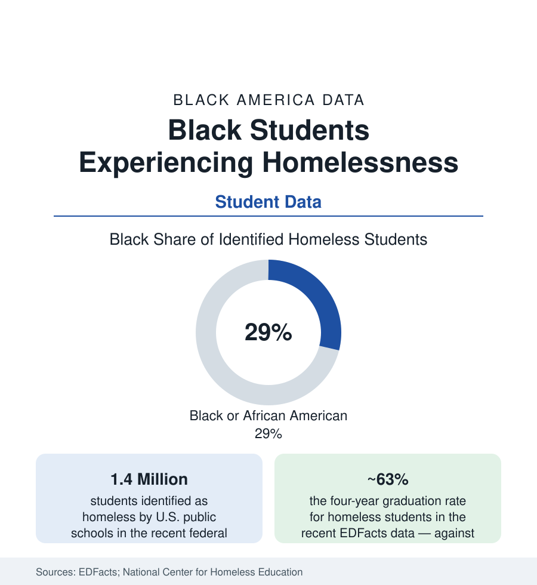

Black Education
Black Students Experiencing Homelessness: 400,000 Children the System Counts at Night
About 400,000 Black students are identified as homeless by their schools — roughly 30% of the total from 15% of enrollment. The McKinney-Vento data and the graduation ledger.

Every school year, America's public schools identify about 1.4 million of their own students as homeless — children in shelters, in motels, in cars, and above all 'doubled up' on the couches and floors of other families' homes. About 29% of them are Black, from 15% of enrollment — the housing file arriving in the classroom, counted by the school itself under the McKinney-Vento Act's broad definition. These students graduate at rates near sixty-three percent against eighty-seven for the student body. The file is where the eviction data, the shelter data, and the education data become the same children's names on the same rosters. This article reads it.
The Count and Its Composition
The National Center for Homeless Education's annual consolidations draw the population: the doubled-up majority (roughly three-quarters of identified students — the family that lost the lease and landed in a grandmother's or a friend's living room, the grandparents article's households under maximum load); the shelter and transitional-housing tier (about one in seven); hotels and motels (a tenth, the pandemic-era housing programs' population persisting); and the unsheltered fraction (cars, parks, abandoned buildings — the smallest share of the school count and its most urgent). The identification itself is a data problem with a racial layer: the counts depend on the district's liaison (the McKinney-Vento coordinator every district must name — the position's staffing, full-time or collateral-duty, varying by the funding file) and on families disclosing to the school — the undercount studies estimating the true figure well above the identified one, with Black families' disclosure calculus (the shelter system's and child welfare's shadow in the background of the decision) a documented factor in the qualitative literature. The unaccompanied-youth slice (tens of thousands of teenagers enrolled without a parent or guardian) and the preschool gap (the youngest homeless children, pre-identification by definition) complete the census's edges.
The School Experience in the Data
The education data on the identified students read as the mobility file squared: school changes mid-year (the Act's school-of-origin right — the student's legal entitlement to stay in their school with transportation provided — honored in the breach wherever the transportation file fails; the district compliance audits document the gap between the right and the ride); chronic absenteeism at roughly double the overall rate in the state data (the shelter curfew, the motel's distance, the doubled-up household's sleeping arrangements priced in attendance); the credit-accrual wreckage of the moves (partial credits lost between schools — the older students' graduation math destroyed a semester at a time); and the discipline and special-education overlaps (homeless students identified for services at elevated rates in the CRDC cross-tabs — the trauma and the instability reading as behavior and diagnosis in the school's instruments). The outcomes line is the file's summary statistic: graduation near sixty-three percent nationally, with the states' Black homeless students at the intersection the privacy rules often suppress in print — the small-cell asterisk being, as elsewhere in this atlas, its own datum.
What the Interventions Show
The evaluated responses read like the other files' convergences: housing first (the school-based housing partnerships — districts and housing authorities co-locating stabilization with enrollment, the Tacoma and Houston model programs whose attendance and stability data are the sector's reference cases); the liaison at real scale (the American Rescue Plan's homeless-children funds — $800 million directed through the states, the largest single investment in the program's history, whose spending data are now grading what districts chose: transportation, liaisons, motel conversions, direct family aid); identification reform (the screening questions at enrollment, the liaison training, the community-partner pipelines through the shelters and the churches of the religion file); and the postsecondary bridge (the FAFSA's homeless-youth provisions, the campus support programs and the tuition-waiver states' data — the homeless student's road to the attainment file running through a financial-aid form that presumes the family she does not have). The eviction article's policy ledger is this file's upstream — every filing prevented is a roster stabilized — and the liaison's caseload is where the two datasets shake hands.
Reading the Homeless-Students Data
Four hundred thousand Black children, counted by their schools at night and taught by them in the morning: the homeless-students file is the atlas's proof that its sections were never separate subjects. The housing market's filings become the attendance office's absences become the graduation table's gap, in one child's one school year. The Act that counts them was written in 1987. The count has never been higher, and neither has the evidence for what ends it.
More in Black Education
Black Educational Attainment: High School Parity, the College Gap
About 89 percent of Black adults hold a high school diploma and one in four holds a bachelor's degree or higher — the attainment ladder, the college completion gap, and the generational trend.
Historically Black Colleges and Universities: Enrollment and Degrees
More than 100 HBCUs enroll roughly 290,000 students and award about one in six Black bachelor's degrees — an outsized share from a small sector. The federal education data.
Black College Enrollment: 2.4 Million Students
About 2.4 million Black students are enrolled in American colleges — nearly two-thirds of them women. The NCES enrollment data by sector, level, and trend.
Source: U.S. Department of Education EDFacts and National Center for Homeless Education; SchoolHouse Connection; National Center for Education Statistics.